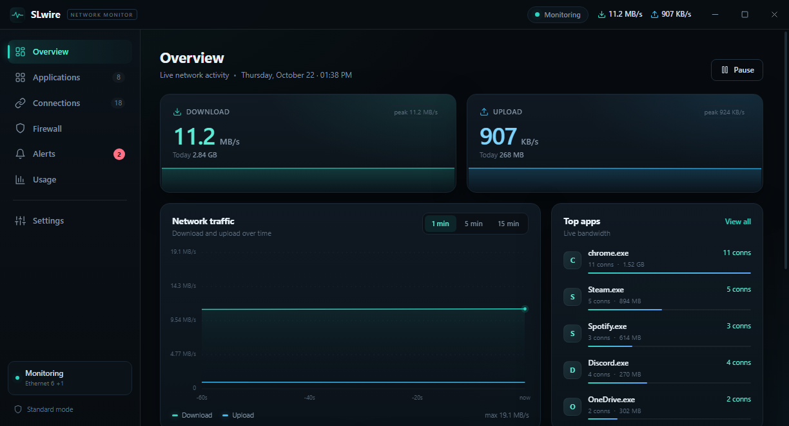
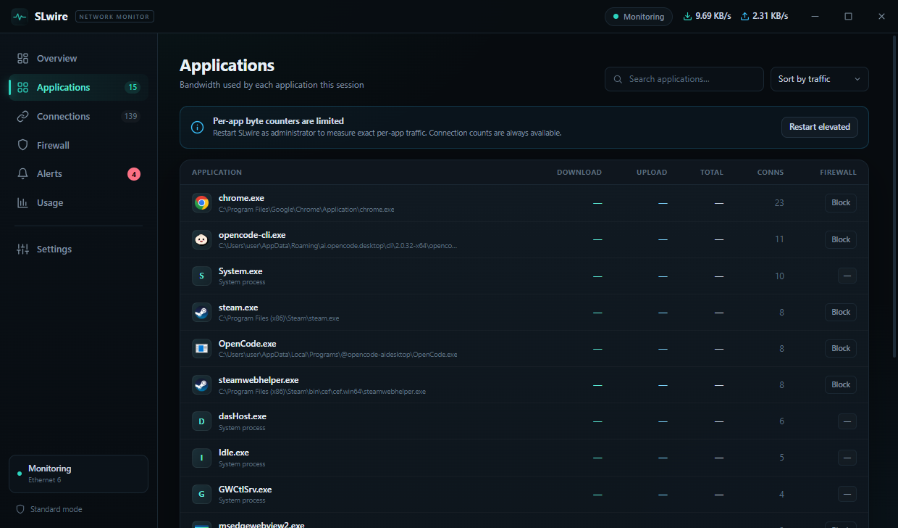
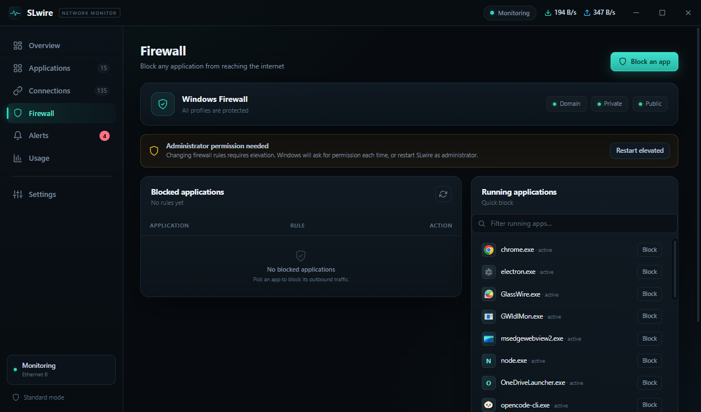
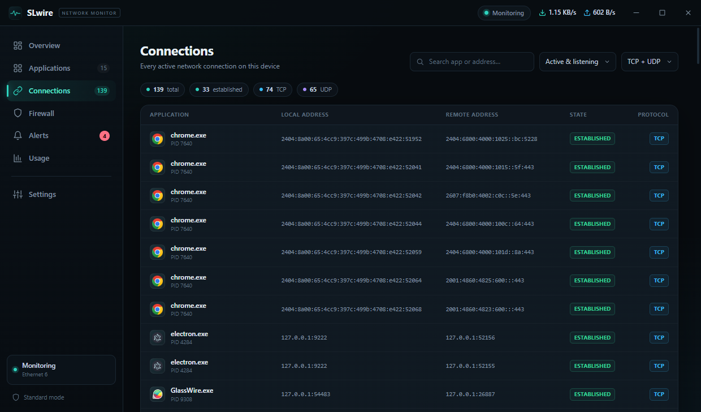
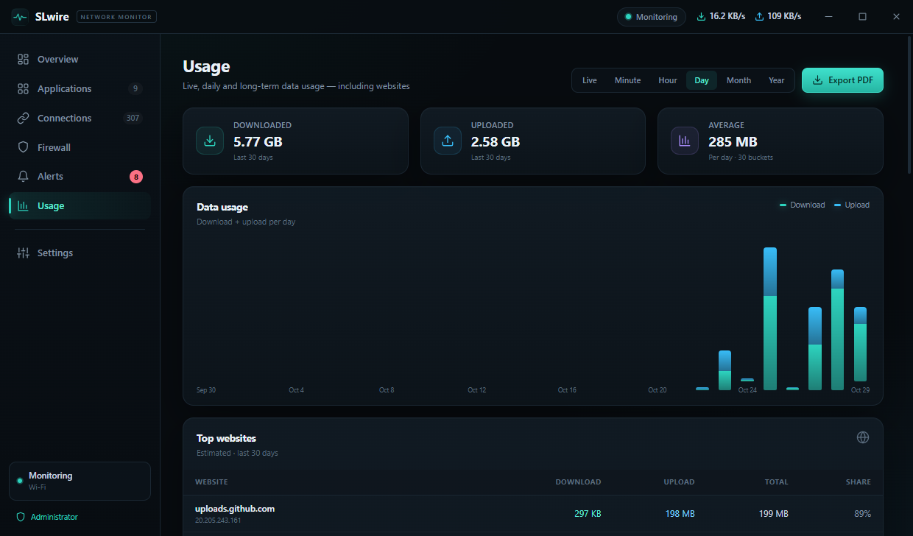
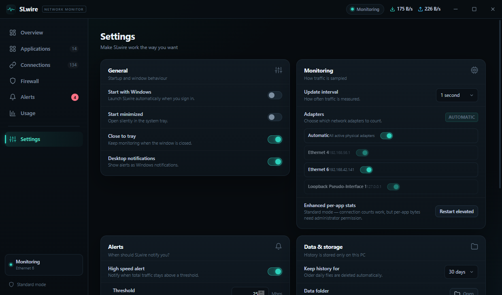

Live traffic
Watch download and upload speeds in real time, with a rolling graph and 1, 5, and 15-minute averages.
SLwire gives you a live view of your Windows traffic — which apps are using data, where connections go, and how to stop them. Lightweight, local, and always one click from the tray.

Everything you need to understand your connection, without another cloud account or a dashboard that gets in the way.
Watch download and upload speeds in real time, with a rolling graph and 1, 5, and 15-minute averages.
See which processes are talking to the internet and how much data each one has used. No guesswork.
Inspect TCP and UDP endpoints, ports, connection state, PID, and the process behind each connection.
Block or unblock an app with a Windows Firewall rule, right from the dashboard. Changes are immediate.
Get notified about speed spikes, daily data limits, new applications, and firewall changes.
Daily usage is saved under %APPDATA%\SLwire. No account, no sync, no traffic uploaded anywhere.
Dark, dense, and readable. Built for a quick glance at the tray — or a deep dive when something feels off.

Know what is using your data.

One click to block or allow.

Follow every endpoint.

Your data, day by day.

Tune it once, then forget it.
SLwire registers a Task Scheduler entry with highest privileges, so it can start silently at sign-in — no logon UAC prompt, no extra shortcut, no dashboard popping up in your face.
No UAC prompt on automatic startup
Pick the installer for a normal Windows setup, or the portable EXE when you want to keep everything in one folder.
Windows 10 / 11 · 64-bit · Administrator access required
Grab the installer. The EXE is about 89 MB, with no bundled extras.
If SmartScreen appears, choose More info → Run anyway, then approve the UAC prompt.
SLwire opens in the tray. Auto-start is on by default for Windows sign-in.
Heads up: SLwire is an independent, unsigned build. Windows SmartScreen may warn you the first time. The download links above point directly to this repository's release assets. Verify the SHA-256 checksum if you want extra confidence.
A few details before you install. No account, no cloud, no surprises.
Yes. Windows requires elevation to read per-process network counters and to create Windows Firewall rules. The app is built to run elevated.
No. Automatic startup uses a Task Scheduler task with highest privileges, so it starts silently at sign-in. Only a manual launch asks for UAC.
Per-app byte counters are TCP-only. Apps that mostly use UDP or QUIC may show little or no app-level traffic. Overall traffic totals are unaffected.
Everything stays on your PC under %APPDATA%\SLwire — settings, alerts, firewall rules, and daily history. Nothing is uploaded to a cloud account.
Yes. With close-to-tray enabled, closing the window hides it. Use the tray icon to reopen it or to quit completely.
Yes. The portable EXE runs without a standard install. It still needs administrator access and still stores its settings in your user profile.